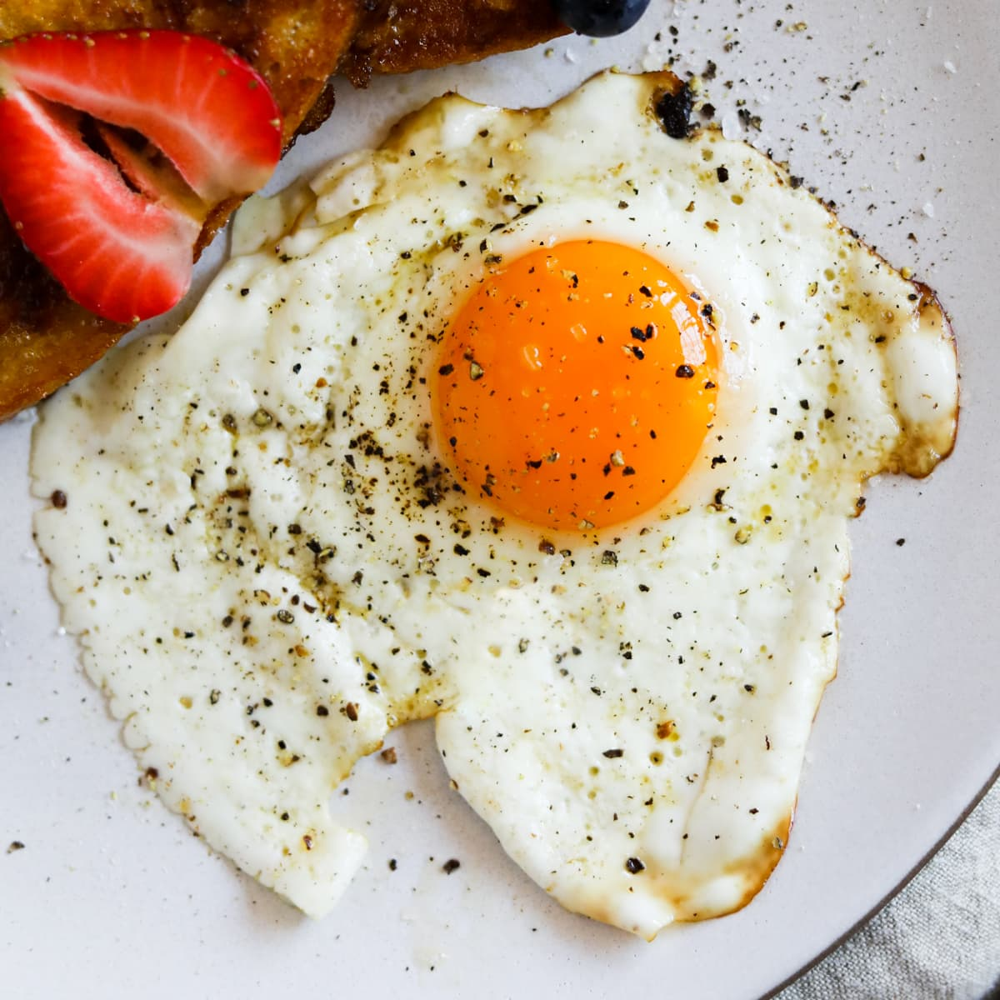

Air Fryer Fried Eggs

This makes fried eggs easier and quicker than ever before!
Air fryers are all the rage right now and getting the most recipes out if it is the best way to use it!
If you are ever in a hurry and need to make something quick and delicious before your coffee is ready, this is the recipe for you!
Ingredients
- 1 piece aluminum foil (4x5 inches)
- cooking spray
- 1 large egg
- salt and freshly ground black pepper to taste
Steps
- Preheat an air fryer to 380 degrees F (193 degrees C).
- Shape aluminum foil piece into a circular shape leaving the bottom flat with edges curled inward to form a bowl. Spray the bottom of the foil bowl with non-stick cooking spray and set into air fryer basket.
- Crack egg into the center of the foil and cook for 4 minutes.
- Remove foil bowll from the basket and season with salt and pepper to taste.